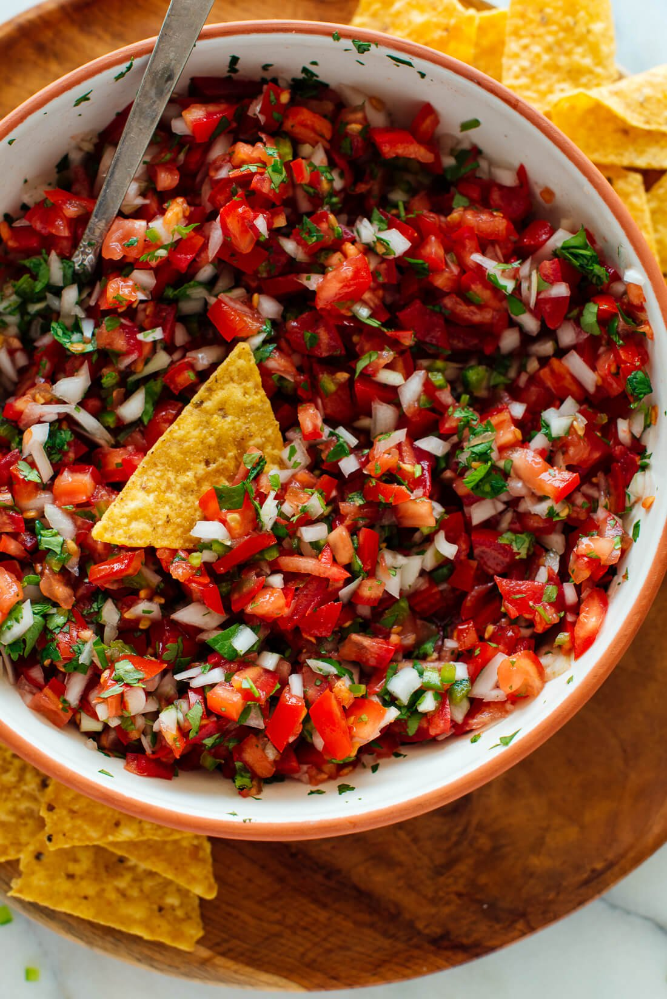

Pico-de-Gallo

Description
This pico de gallo recipe is fresh, delicious and easy to make! You'll need only 5 ingredients to make this classic Mexican dip—tomato, onion, cilantro, jalapeño and lime. Recipe yields about 4 cups (about 8 servings).
Ingredients
- 1 cup finely chopped white onion (about 1 small onion)
- 1 medium jalapeño or serrano pepper, ribs and seeds removed, finely chopped (decrease or omit if sensitive to spice, or add another if you love heat)
- ¼ cup lime juice
- ¾ teaspoon fine sea salt, more to taste
- 1 ½ pounds ripe red tomatoes (about 8 small or 4 large), chopped
- ½ cup finely chopped fresh cilantro (about 1 bunch)
Steps
- In a small bowl, combine sour cream, lemon juice, garlic, dill, salt and pepper to taste. Stir and set aside while prepping salad.
- Peel (if necessary) and slice cucumbers into thin rounds or half rounds if using large cucumbers. Place in a large mixing bowl. Add thinly sliced onion.
- Just before serving, pour the sauce over the cucumbers and onions, and mix to coat. After adding sauce, the salad will stay fresh for about 2-3 hours if refrigerated.
Home